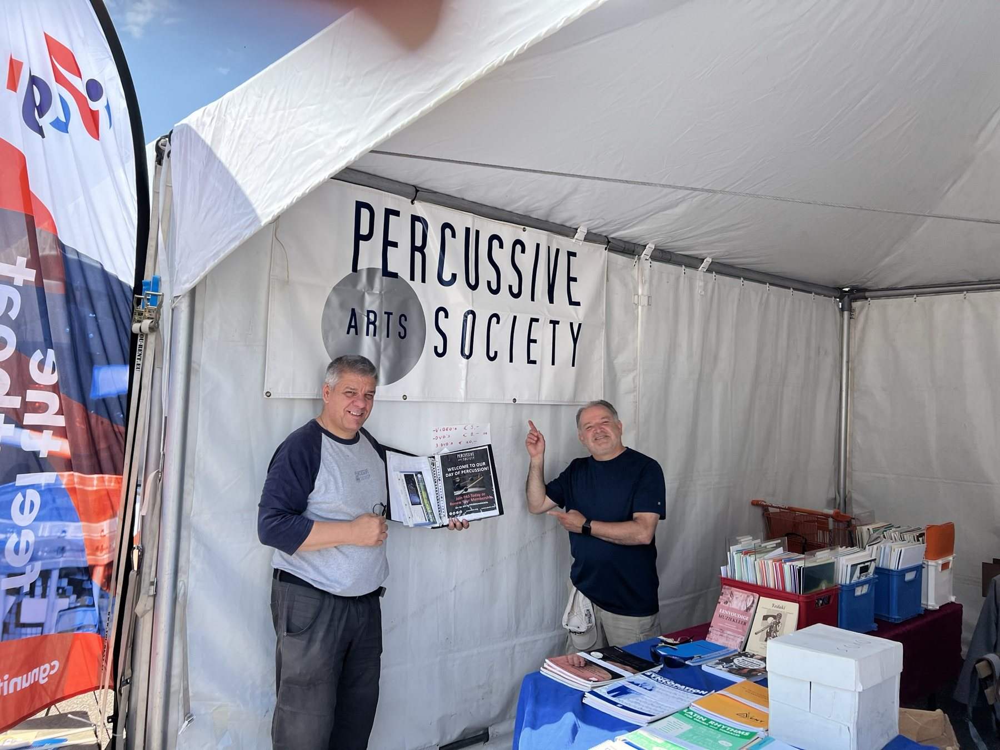
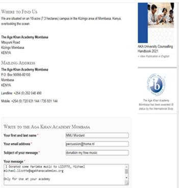
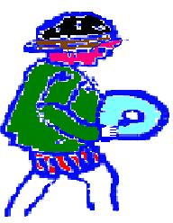
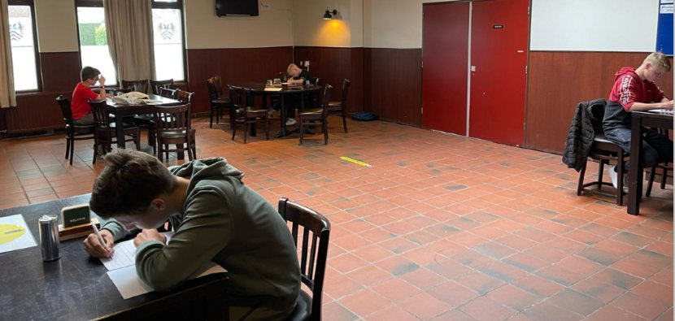

Bildung & Projekte
Projekte und Workshops
Praxisnahe Projekte, die Rhythmus, Kreativität und Instrumentenbau in Schulen, Kindergärten und Musikvereine bringen — in den Niederlanden und in Deutschland.
Projekte in den Niederlanden
Niederlande
Weitere Aktivitäten
Workshops, Kurse und mehr
Eine Übersicht nach Jahren über Workshops, Trommel-AGs an Schulen, Kurse und weitere Aktivitäten.
- 2024
- Workshop, Grundschule De Neerakker, Heythuysen
- Workshop, Grundschule Franciscus, Bunde
- Grundschule Don Bosco Eschweiler — Trommel-AG

- 2023
- Workshop, Catharina-Schule, Heerlen
- Workshop, Grundschule De Neerakker, Heythuysen
- Grundschule Don Bosco Eschweiler — Trommel-AG
- 2022
- World Music Contest (W.M.C.), Kerkrade
- Grundschule Don Bosco Eschweiler — Trommel-AG

PAS-Stand beim WMC Kerkrade. 
“A World of Percussion Music”. - 2021
- Online-Schlagzeugwettbewerb
- Notenspende
- Kindergarten Alsdorf — Trommelspiel-AG
- Grundschule Don Bosco Eschweiler — Trommel-AG

Online-Solistenwettbewerb 2021. 
Notenspende. - 2019bis 2020
- Kindergarten Alsdorf — Trommel-AG
- Grundschule Don Bosco Eschweiler — Trommel-AG
- Schlagzeugschule: Tag der offenen Tür
- Theoriekurs — Limbricht, Schimmert, Schinnen u. a.

Tag der offenen Tür, Schlagzeugschule. 
Theoriekurs. - 2017
- Kindergarten Alsdorf — Trommel-AG
- Grundschule Don Bosco Eschweiler — Trommel-AG

Kindergarten Alsdorf. 
Grundschule Don Bosco, Eschweiler. - 2016
- Myouthic-Workshop, Grundschule Koningslust
- 2015
- Workshop, Trommler- und Pfeifercorps 1931 Kinzweiler e.V.
- Workshop, Batterbarak Maasniel
- Sporting Heerlen Fußballcamp
- 2014
- Trommler- und Pfeifercorps Mausbach 1920 e.V.
- 2012
- Workshop, St. Pieter Maastricht (mit Myrthe und Sander)
- 2011
- Workshop, Bergrath (Deutschland)
- 2010
- 20. März — Dirigier-Workshop beim Bond van Tambour Maîtres (bvtm.nl)
- 2006
- Schulworkshop
- 2004
- 2000– heute


2004
Slagwerkkrant
Anzeige in der niederländischen Schlagzeugzeitschrift Slagwerkkrant.